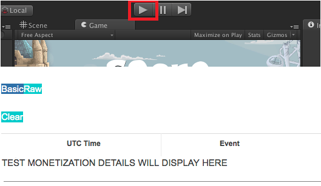

Unity Analytics allows you to track specific events within your game. By configuring a series of Custom Events within your game, you can create your own Funnel Analysis to observe your players’ game behavior. Good places to put custom events include: milestones, new levels, scene transitions, etc.
In addition to tracking custom events, Unity Analytics also allows you to pass in custom dimensions (dictionary) relating to the event. These custom dimensions are primarily useful to know additional specifications about the user at the time the custom event was reached.
// Reference the Unity Analytics SDK namespace
using UnityEngine.Cloud.Analytics;
UnityAnalytics.CustomEvent(string customEventName,
IDictionary<string, object> eventData);
| Name | Type | Description |
|---|---|---|
| customEventName | string | Name of custom event. Name cannot include the prefix “unity.” - This is a reserved keyword. |
| Dictionary | dictionary | Additional parameters sent to Unity Analytics at the time the custom event was triggered. Dictionary key cannot include the prefix “unity.” - This is a reserved keyword. |
A few considerations with regards to the custom events:
In the example below we are interested in knowing what our user had in their inventory at the time they reached the Game Over scene of our game.
// Reference the Collections Generic namespace
using System.Collections.Generic;
int totalPotions = 5;
int totalCoins = 100;
string weaponID = "Weapon_102";
UnityAnalytics.CustomEvent("gameOver", new Dictionary<string, object>
{
{ "potions", totalPotions },
{ "coins", totalCoins },
{ "activeWeapon", weaponID }
});
The Unity Editor can act as a test environment to validate the Unity Analytics SDK integration. This means that it is not required that you build and publish your game in order to validate the Basic Integration.
To send test data to our servers and validate your integration, simply play your game by pressing the Play button.
